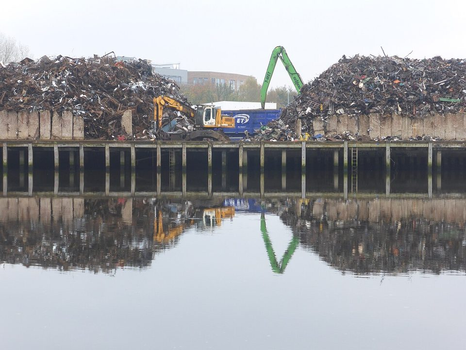
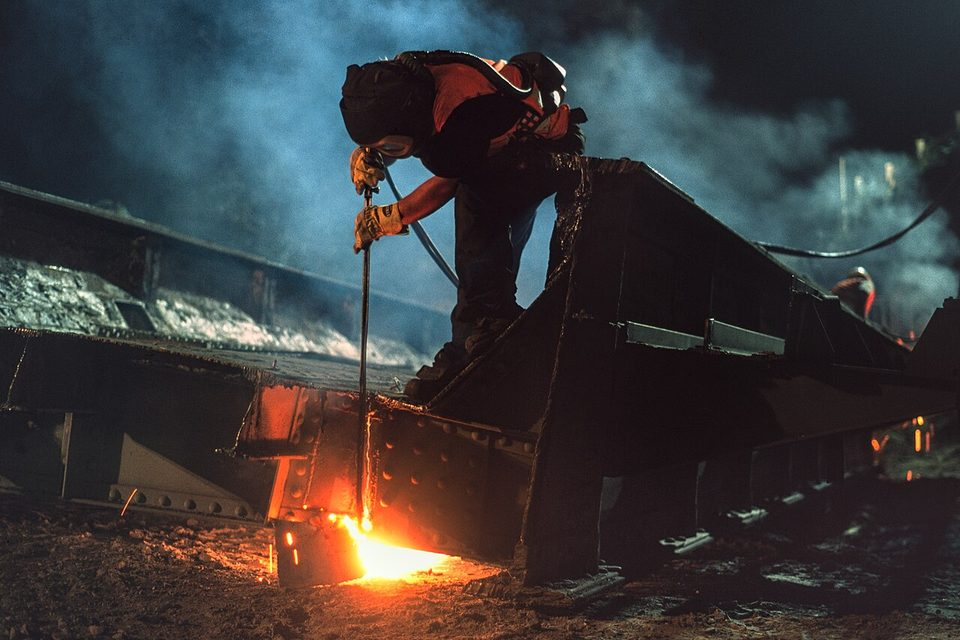
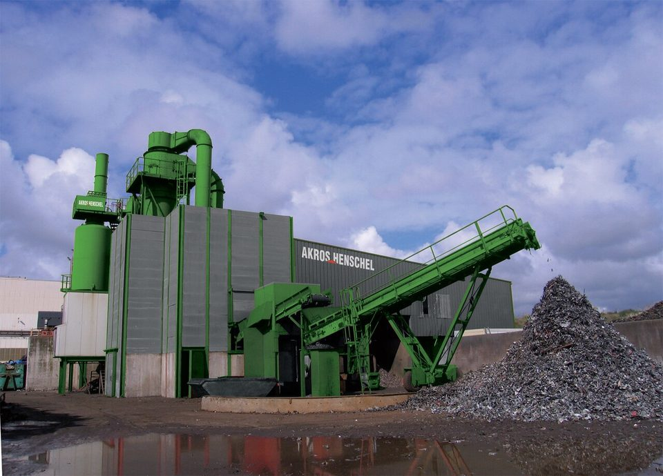

STEEL 101 · SCRAP · 2026.10
廢鋼從哪裡來：全球規模、三種來源與處理流程
鋼鐵潮流工作室 · 發布 2026.10.05

本期重點
鋼是全世界回收量最大的材料。每年約有六億噸廢鋼重新回到煉鋼爐，是電爐煉鋼的主原料，也是高爐轉爐鋼廠減碳的捷徑。廢鋼不是「撿來就能用」，從回收、分類、剪切破碎到檢驗，每一道工序都決定它能煉出什麼等級的鋼。
- 規模。 國際回收局（BIR）統計涵蓋全球約 75% 產量的國家，2025 年廢鋼用量 4.8 億噸、年增 4.5%；推估全球總量約 6 億噸以上。
- 三種來源。 鋼廠內的回爐料、加工廠的下腳料，以及報廢汽車、拆除建物等折舊廢鋼；後者量最大、也最難處理。
- 處理流程。 分類與輻射偵檢之後，依形狀剪切、打包或破碎，再以磁選分離非鐵金屬，按國際規格分級出貨。
- 品質關鍵。 銅、錫等殘留元素煉鋼時去不掉，放射源誤混更是大忌；台灣 1980 年代的輻射鋼筋事件，就是廢鋼管控失誤的教訓。
關鍵數字
廢鋼的三種來源
| 類別 | 從哪裡來 | 特性 |
|---|---|---|
| 自產廢鋼（回爐料） | 鋼廠內部：連鑄切頭切尾、軋延修邊、不合格品 | 成分清楚、最乾淨，通常不出廠，直接回爐 |
| 加工廢鋼（新廢鋼） | 下游加工廠：汽車沖壓下腳料、鋼構裁切餘料、機械加工屑 | 成分接近原鋼種、雜質少，價格最高，量隨製造業景氣變動 |
| 折舊廢鋼（舊廢鋼） | 報廢汽車、家電、拆除建物與橋梁、船舶、機械設備 | 量最大、來源最雜，常混有銅線、塗層、塑膠，需要大量前處理 |
折舊廢鋼的供給取決於「多年前用掉多少鋼」。鋼材在社會中服役的時間差異很大：包裝用鋼不到一年就回收，家電約十年上下，汽車十幾年，建築與基礎設施則可長達數十年甚至上百年。這也是業界普遍預期中國廢鋼供給將持續增加的原因：2000 年代以來大量興建的建物、汽車與機械，正陸續進入報廢期。

全球規模：誰用、誰賣、誰買
廢鋼用量與煉鋼路線直接相關。電爐煉鋼可以使用 100% 廢鋼；高爐轉爐流程以鐵水為主，廢鋼通常只占兩成以內，主要作為吹煉時的冷卻料。因此電爐比重高的國家，廢鋼比（廢鋼占粗鋼原料的比例）就高。
廢鋼的國際貿易則是「已開發國家賣、新興國家買」。歐美日累積了大量鋼鐵存量，折舊廢鋼供給充足；土耳其、印度、巴基斯坦、孟加拉等以電爐為主、自產廢鋼不足的國家，則是主要買家。
土耳其進口廢鋼的到岸價格（HMS 1&2 80:20 CFR）是國際廢鋼最重要的定價基準，亞洲則常參考日本 H2 出口價與美國貨櫃廢鋼報價。
處理流程：從報廢品到爐料
折舊廢鋼要變成鋼廠能直接投料的「爐料」，必須經過一連串前處理。目標只有三個：尺寸合適、密度夠高、雜質夠少。
- 回收收購回收商、拆解廠、加工廠集貨
- 拆解報廢車拆除油液、電池、輪胎與觸媒
- 輻射偵檢進場門框偵測，排除放射源
- 分類依厚度、材質、來源分堆
- 剪切鱷魚剪、門式剪切斷大型料
- 打包薄料壓成方塊，提高密度
- 破碎破碎機打成拳頭大小碎片
- 分選磁選取鐵，渦電流分出銅鋁
- 檢驗分級依規格分級、抽驗成分
- 入爐以料籃、料槽投入電爐或轉爐

- 剪切。 厚重的鋼板、型鋼、鋼軌、拆除鋼構，用液壓鱷魚剪或門式剪切成入爐尺寸；超大構件則先以火焰切割。
- 打包。 薄板下腳料、鍍鋅鋼片等鬆散輕料，用打包機壓成方塊，提高堆積密度，減少電爐加料次數。
- 破碎。 報廢汽車、家電等混合料送進破碎機，高速旋轉的錘頭將其打成拳頭大小的碎片，再經磁選取出鐵料，渦電流分選機回收銅、鋁等非鐵金屬，剩下的塑膠、橡膠、纖維則是破碎殘渣。破碎料密度高、成分均勻，是電爐最愛用的料種之一。
廢鋼怎麼分等級
國際貿易多採美國回收材料協會（ReMA，前身為 ISRI）的規格。以下以美國電爐廠的收料規格為例，各廠細節不盡相同：
| 等級 | 內容 | 收料重點 |
|---|---|---|
| HMS 1（重熔廢鋼一級） | 厚鋼板、型鋼、拆除鋼構等折舊料 | 只收厚料，切成可直接入爐的尺寸 |
| HMS 2（重熔廢鋼二級） | 較薄的折舊料，可含少量鍍鋅料 | 不得有鉛錫鍍層；鋼筋比例受限 |
| 破碎料（Shredded） | 報廢汽車等經破碎、磁選的碎片 | 成分均勻、密度高；限制銅含量 |
| 新料（Busheling） | 沖壓下腳料等乾淨的新廢鋼 | 不含舊車身料；銅、鉻限制最嚴 |
| 板料與結構料（P&S） | 切割好的鋼板、型鋼 | 只收厚料；限制磷、硫 |
國際報價常見的「HMS 1&2 80:20」，就是 HMS 1 占八成、HMS 2 占兩成的混裝比例。日本則有自己的分級，出口量最大的是 H2（相當於厚度較薄的重廢）。
品質的兩大敵人：殘留元素與輻射
- 殘留元素。 銅、錫、鎳、鉻、鉬等元素比鐵更不易氧化，在電爐或轉爐裡幾乎去除不了，只能靠配料稀釋。其中銅與錫最麻煩：鋼胚加熱時，鋼表面氧化後銅會在表層富集並熔化，滲入晶界，熱軋時產生表面裂紋，稱為「熱脆」。汽車外板、深衝用鋼對銅含量要求極嚴，因此純廢鋼電爐很難生產高階薄板，需要搭配直接還原鐵（DRI）、生鐵等乾淨鐵源。
- 放射源。 醫療、工業用的密封放射源若被當成廢鐵回收，熔進鋼裡就無法去除。台灣在 1982 至 1984 年間，有含鈷-60 的廢鋼被煉成鋼筋，流入住宅與學校。1992 年全面揭露時，涉及 189 處、300 多棟建物、1,663 戶，約 1.3 萬人受到曝露，即俗稱的「輻射屋」事件。此後鋼廠在廢鋼進料處設置輻射偵檢門；以 2019 年彰化一家鋼廠的案例，廢鐵表面劑量率超過法定上限每小時 0.2 微西弗，即須隔離並通報主管機關。
鋼廠怎麼用廢鋼
- 電爐。 以廢鋼為主原料，用電弧熔化。台灣的豐興、威致、東和、燁聯等電爐廠都以廢鋼為主要原料，生產鋼筋、型鋼、不銹鋼等產品。廢鋼價格是電爐廠最大的成本變數，國內電爐廠每週公布的廢鋼收購價也成為市場行情指標。
- 轉爐。 高爐鐵水吹氧煉鋼時會放熱，加入廢鋼可吸收多餘熱量。提高廢鋼比等於減少鐵水用量，也就少用了煉鐵的焦炭與鐵礦，是一貫作業鋼廠最直接的減碳手段之一。報導指出，中鋼已將轉爐廢鋼比由約一成提高到兩成。
- 搶料時代。 在減碳壓力下，高爐鋼廠提高廢鋼比、各國新建電爐，優質低銅廢鋼變得搶手。台灣自產廢鋼有限，長期仰賴美國、日本等地進口，國際廢鋼價格對國內鋼價的影響也越來越大。
延伸閱讀
資料來源
- BIR: Global recycled steel consumption rises despite lower crude steel output in 2025（SteelOrbis，2026-06-03）
- Global scrap consumption rose by 4.5% y/y in 2025 — BIR（GMK Center）
- Global recycled steel use reaches 630 million tonnes（Recycling Product News，BIR 2025 上半年版）
- Steel of West Virginia Scrap Specifications（Steel Dynamics 旗下電爐廠收料規格）
- 廢鋼搶手 電爐、高爐都要（工商時報，2024-01-12）
- 輻射屋事件相關報導（關鍵評論網）
- 60Co contamination in recycled steel resulting in elevated civilian radiation doses（臺北醫學大學研究成果）
- 彰化鋼鐵廠進料檢測門測出輻射廢鐵（NOWnews，2019-01-23）
內容僅供產業資訊參考，不構成投資建議。新聞版權屬原出處所有。